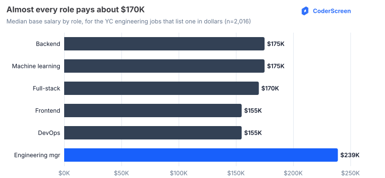
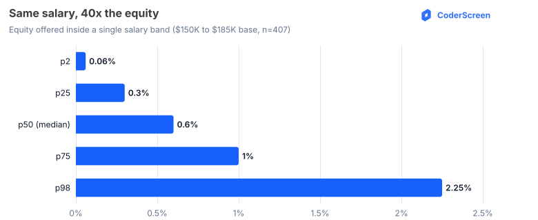
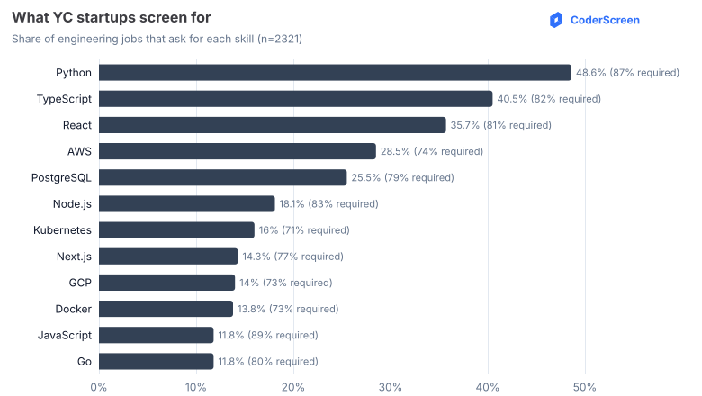
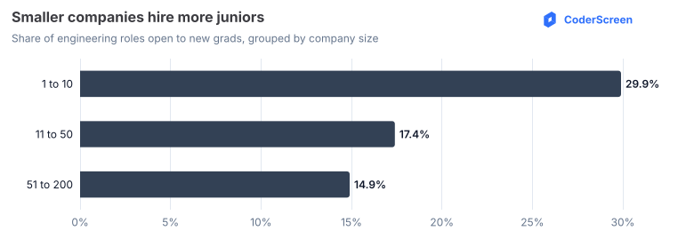

Blog charts — generated from the DB
Regenerate with bun run src/charts.ts. SVGs live in charts/.
The $170K wall

The 40× equity spread

Most-demanded skills

What actually pays

Does requiring AI pay?

New grads by company size
